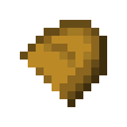

This is my portfolio, and i make cool stuff!
Hello!
My name name is [REDACTED], and my username is half bread (obviously)
I'm a high school dumbass prodegy who really enjoys playing video games, making video games,
and is interested in fields such as:
I'm really passionate about making video games alongside my friend the bread (I'M THE ORIGINAL ONE FYI!!!!!), and in the current process of making little tech demos to kinda... get the gist of things i'd say :]
I had the luxury & privilege of being exposed to video games and relative forms of media at a young age, and grew insanely obsessed with games, and later down in life wanted to make games!
And for the music part, well, uhhhhhh, i'm just overly addicted to music -.-
Oh and i've formed a little indie band duo with my sister, but i still ought an amplifier for my guitar and her coöperation to actually start making anything :S
I am currently actively working on the project Mesocyclone
More info on it on the URL (it isn't my game afterall), but it's a very cool project and i highly recommend you check it out!! :D
I've also worked on several other projects
; all of which have been discontinued due to hardware limitations & burnout . . . and my deep hatrid for coding game engines :'3
Here are all of my socials! both personal and Bread Productions: